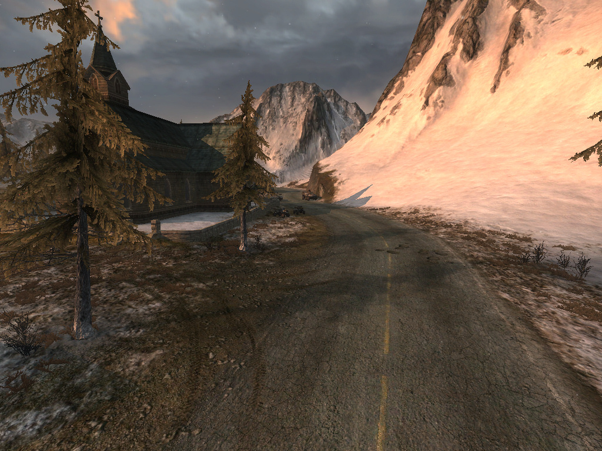
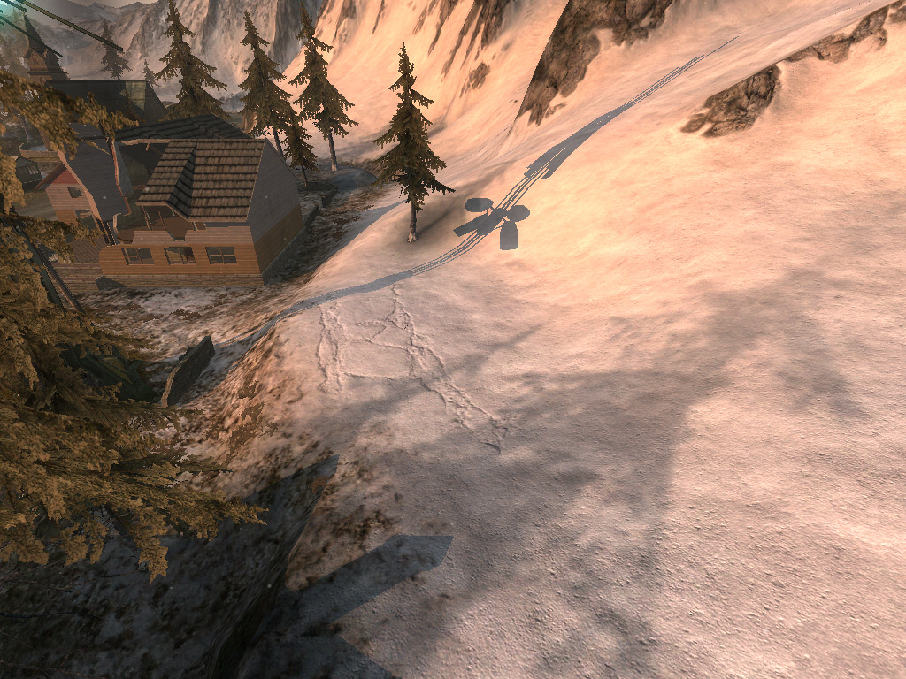

suppagam
I was testing out the terrain system in Urho3D and I was trying to find out how to do terrain texture LOD. The current terrain system has a geometry LOD that works pretty well, but the texture doesn’t really change. So, let’s say you have a very nice diffuse + normal on your terrain, and it looks great at a distance, but terrible up close.
How is it possible to define the LOD for terrain textures? Kinda like what Enemy Territory Quake Wars did here:


https://wiki.splashdamage.com/index.php/An_Advanced_Terrain_and_Megatexture
Each layer seems to have a material, which has LOD levels.